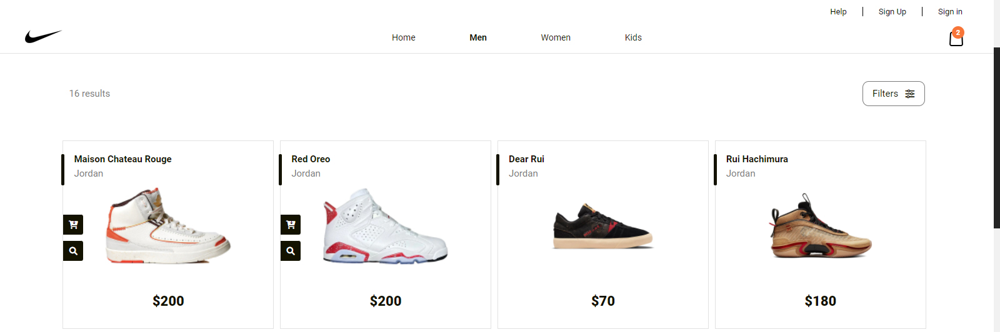
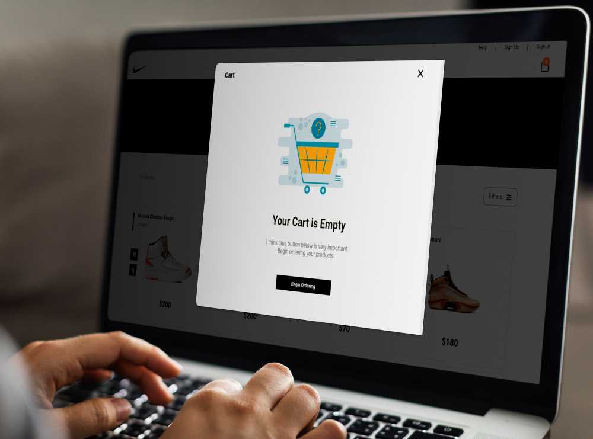
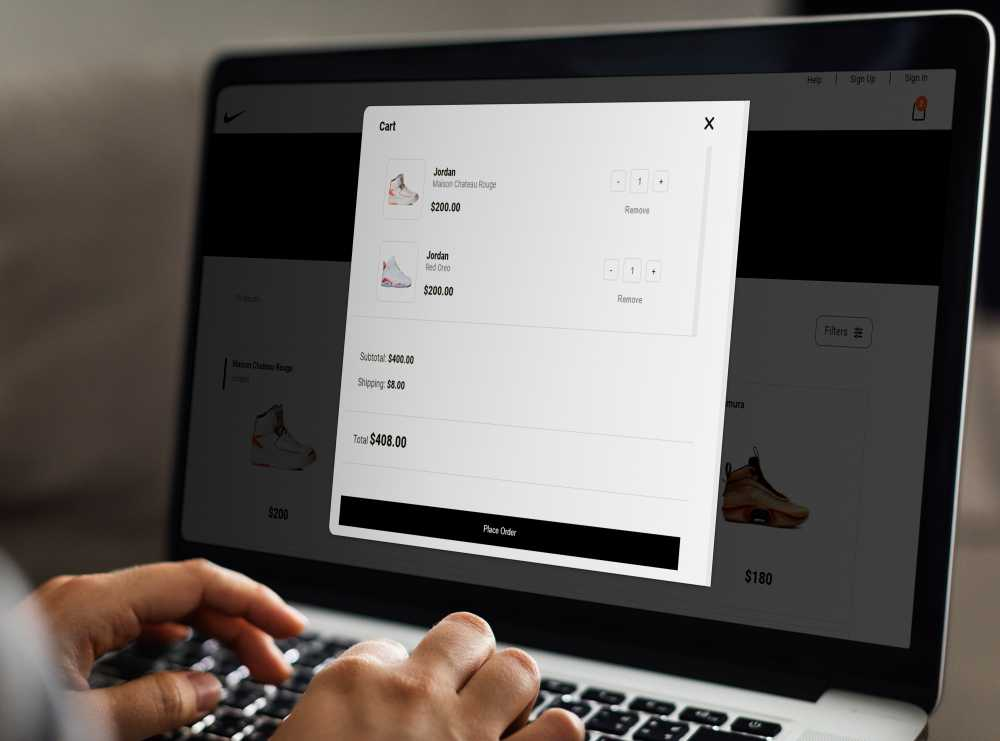
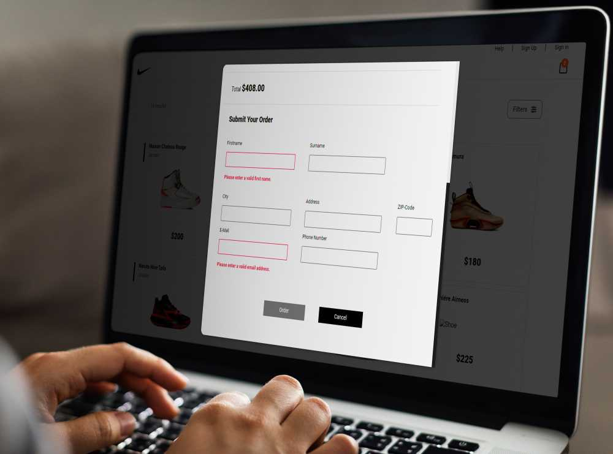
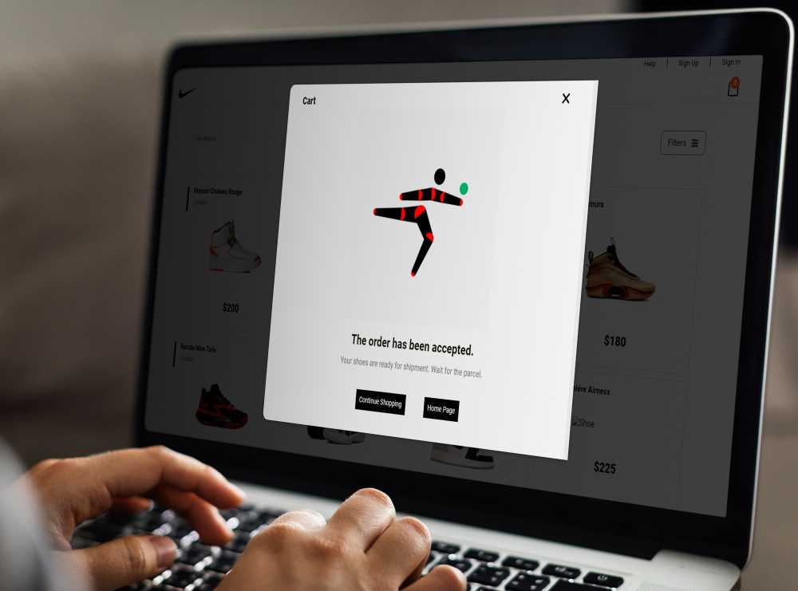
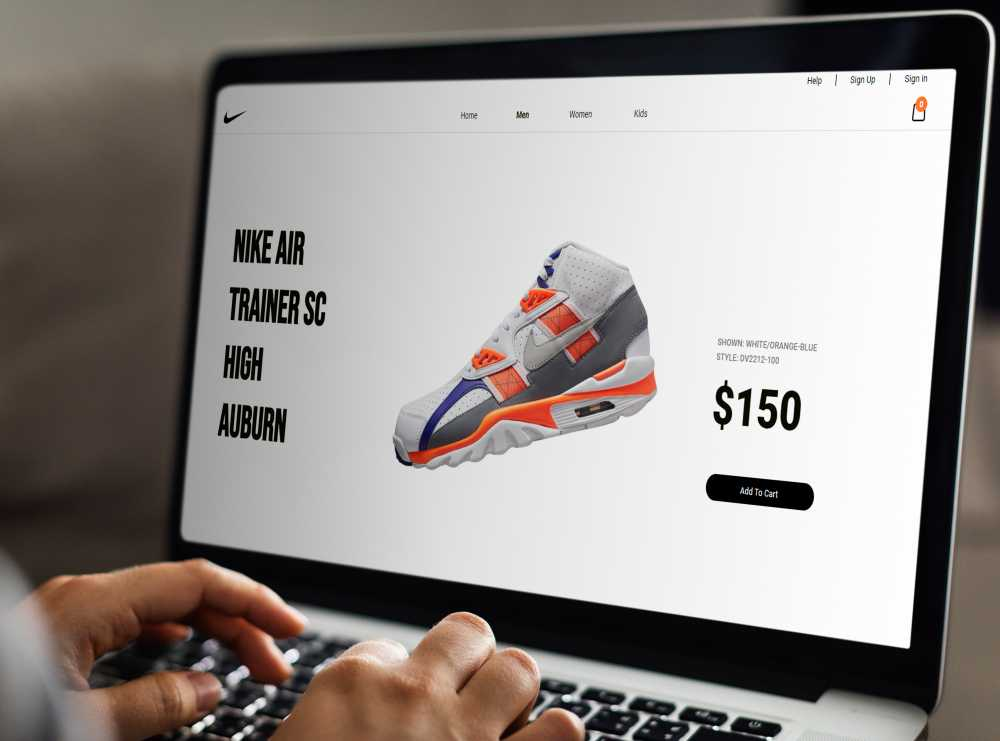

React Store App jest to moja pierwsza, w pełni samodzielnie wykonana aplikacja internetowa w React.js. Podczas nauki zdecydowałem, że nadeszła odpowiednia pora na utrwalenie wszystkiego co dotychczas poznałem. Tym samym postanowiłem stworzyć Single Page Application, która wykorzystuje informacje pochodzące z zewnętrznego API. Od samego początku, celem było stworzenie mini sklepu internetowego (bez funkcjonalności backendowych). Chciałem powtórzyć wszystko co związane m.in. z Routingiem czy Reduxem.
W TRAKCIE REALIZACJI
Użytkownik, wchodząc na stronę internetową, ma bezpośredni
dostęp do sklepu internetowego. Podzielony został on na trzy
różne działy obuwnicze - męski, damski oraz dziecięcy. Jako, że
jest to Single Page Application, poruszanie pomiędzy
komponentami, zrealizowane zostało przy pomocy React Router w
wersji 6 i obsługi adresu URL dodatkowymi, opcjonalnymi
parametrami. Z poziomu sklepu, użytkownik jest w stanie
filtrować zwrócone wyniki. Obecnie dostarczone zostały cztery
opcje filtracji: płeć, marka, kolorystyka oraz cena.
Główny komponent sklepu zawiera dynamicznie dopasowywane pod
kątem wymagań użytkownika dane, pochodzące z zewnętrznego API.
Dane te przedstawiają poszczególne produkty, wraz ze wszelkimi
szczegółami, tj. kolorystyka, zdjęcia, marka, nazwa itp.
Każdy produkt można zarówno dodać do koszyka jak i go usunąć. W tym celu wystarczy nacisnąć na zdjęcie interesującego nas produktu oraz wybrać jedną z dwóch akcji, które reprezentowane są przez specjalne ikony. Pierwsza z nich służy do dodawania do koszyka natomiast druga do wyświetlania szczegółów danego produktu. Po umieszczeniu produktu w koszyku, zmianie ulega stan koszyka.
Dostęp do koszyka możliwy jest z każdego miejsca aplikacji. Sam koszyk posiada dynamiczny content, który dopasowywany jest w zależności od tego czy coś się w nim znajduje czy nie. W ten sposób można odpowiednio informować użytkownika o aktualnym stanie zakupów. W momencie gdy użytkownik doda produkty do koszyka, jest on w stanie bezpośrednio z jego poziomu zmieniać ich ilość jak i całkowicie je usuwać. Aktualna cena jest dopasowywana w sposób dynamiczny bazując na aktualnej ilości produktów w koszyku.
 Dodatkowo koszyk posiada kilka etapów. Pierwszym z nich jest sprawdzanie aktualnego zamówienia, drugim jest sama jego realizacja, która odbywa się poprzez wypełnienie specjalnie przygotowanego formularza. Formularz posiada podstawową walidację, zrealizowaną przy pomocy customowego hooka.
Po prawidłowej realizacji zamówienia, użytkownikowi ukazuje się specjalny ekran potwierdzający. Dodatkowo cała dotychczasowa zawartość koszyka jest czyszczona a sam użytkownik ma do wyboru dwie akcje - kontynuowanie zakupów jak i przejście do strony głównej.
Każdy produkt posiada swój osobny widok, do którego użytkownik może przejść w celu poznania większej ilości szczegółów na temat konkretnego obuwia. Aktualnie widok ten jest dość podstawowy i nie zawiera bardzo dużej ilości informacji, aczkolwiek w przyszłości, w łatwy sposób można go rozwinąć o dodatkowe funkcjonalności.
Projekt zrealizowany został przy użyciu biblioteki React.js oraz podstawowych narzędzi, służących zarówno do projektowania warstwy wizualnej jak i do kodowania strony internetowej. W trakcie pracy korzystałem z programu Visual Studio Code. Do kontroli wersji oprogramowania, standardowo skorzystałem z Github. Aby aplikacja mogła być pełnoprawną Single Page Application wykorzystałem React Router w wersji 6. Przy okazji tworzenia koszyka, postanowiłem, że przydatne mogą okazać się tzw. App Wide States, które dostarczył mi Redux Toolkit. Dodatkowo do obsługi pól tekstowych formularza wykorzystałem stworzony przeze mnie customowy Hook, który oparty jest o useReducer(). W celach wizualnych, oraz dla lepszego UX zdecydowałem się skorzystać z biblioteki React Toastify, która dostarczyła mi prostych powiadomień, które pokazują się na ekranie użytkownika w momencie zmian stanu koszyka. Dodawanie, usuwanie i zmiana elementów koszyka generuje odpowiednie komunikaty, napisane w języku angielskim. Strona przeszła również podstawową optymalizację. Postanowiłem wykorzystać tzw. Lazy Loading po to, aby komponenty ładowane były tylko wtedy, gdy jest to wymagane. Aplikacja ta jest co prawda na tyle mała, że różnica nie jest diametralnie wielka, aczkolwiek uznałem, że jest to dobrą praktyką a przy okazji dobrym ćwiczeniem.
Jak dobrze wiemy, dostępność aplikacji na urządzeniach mobilnych jest w obecnych czasach rzeczą kluczową. Tym samym, bardzo ważnym było dla mnie zapewnienie odpowiednich widoków dla korzystających ze smartphonów. React Store App jest w pełni responsywna. Cały proces stylowania aplikacji przeprowadzony został zgodnie z zasadą Mobile First.